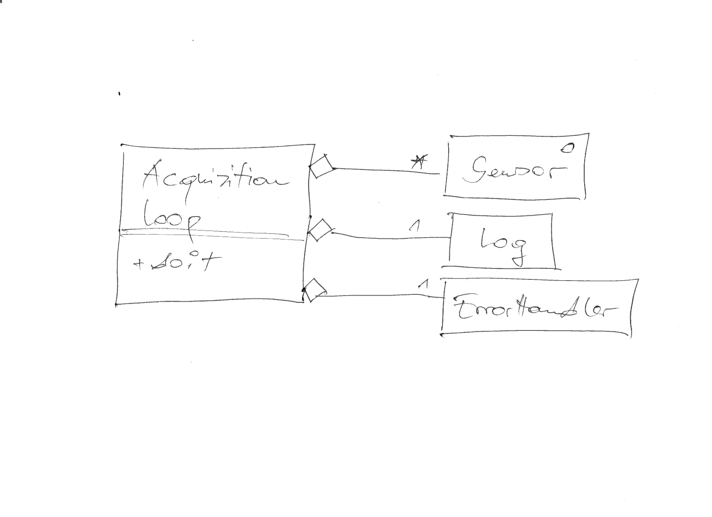
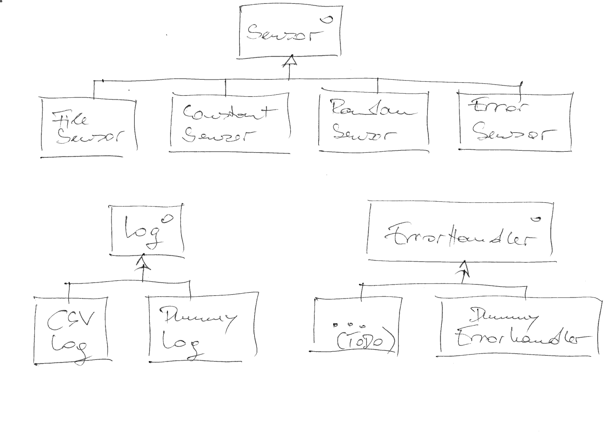

Python Advanced (2023-10-09 - 2023-10-11)¶
Recap Of Python Basics Course (Before Summer)¶
Look through code in https://github.com/jfasch/2023-05-15/tree/main/livehacking/userdb
Project Management: Requirements, Sandboxing, Testing¶
Exercises¶
Clone project: https://github.com/jfasch/2023-10-09
Create virtual environment based upon
requirements.txtBecome acquainted with Test Driven Development: Exercise: Convert User Record To JSON And Back
Object Oriented Programming¶
Classes: Basics¶
Exercise¶
Create a simple class: Exercise: Away From Raw Dictionaries
Classes: More¶
Into The Wild: Group Project Kickoff¶
With a basic understanding of code structuring (classes and modules - and TDD), let’s hack something. Idea: a “data logger” application.
Configurable set of sensors
Polymorphic data sinks
Acquisition engine in the middle
CSV log format initially; if there’s time, we could add more (XML? MQTT?)
Spoiler: Group Project Outcome¶
This is what became of it, at the end of day 3:
A set of sensors, arranged in a class hierarchy
A set of data loggers, arranged in a class hierarchy
A set of error handlers, arranged in a class hierarchy
An acquisition loop class which uses sensors, loggers, and error handlers
|  |  |
{kind=link}
{kind=link}